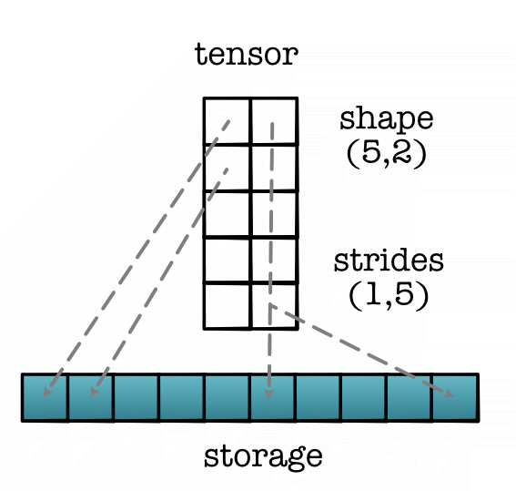
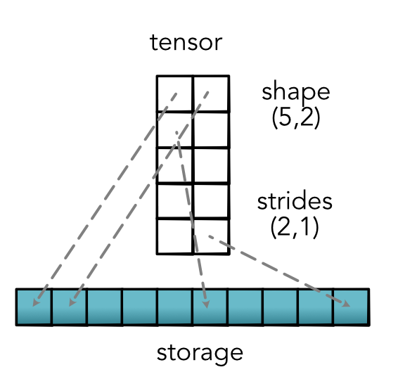
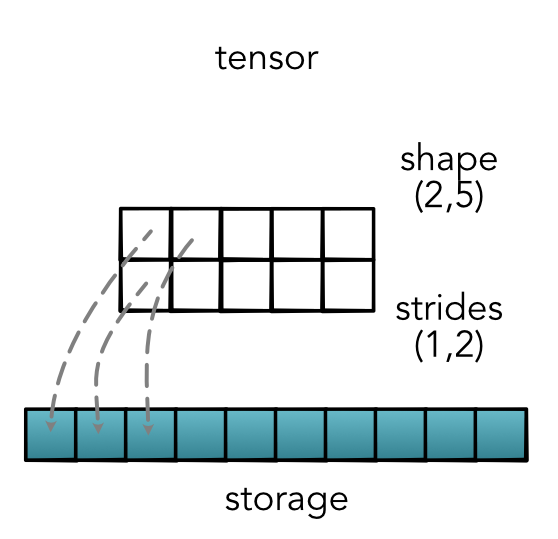
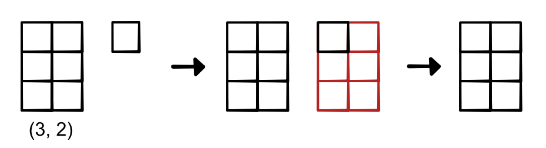
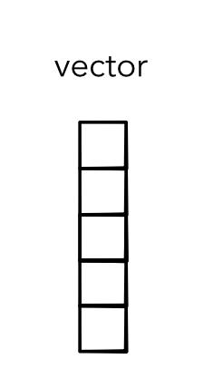
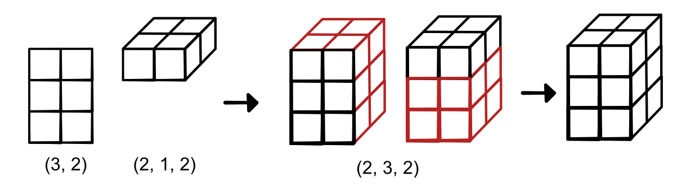
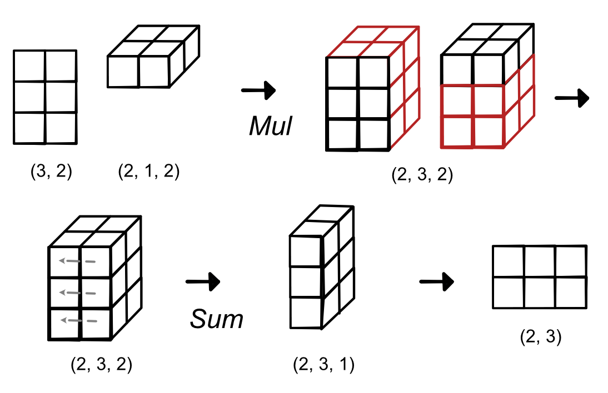

Module 2.2 - Tensor Functions
Lecture
Tensor Functions
Views / Strides
User API
Dims - # dimensions (tensor.dims)
Shape - # cells per dimension (tensor.shape)
Size - # cells (tensor.size)
User Counting
Shape = (2, 3, 2)
Index Counting
(0, 0, 0)
(0, 0, 1)
(0, 1, 0)
Shape Maniputation
Permutation
tensor.permute(1, 0)
Shape Maniputation
Permutation
tensor.permute(2, 1, 0, 3)
Rearranges dims in order given.
How does this work
Storage : 1-D array of numbers of length size
Strides : tuple that provides the mapping from user indexing to the position in the 1-D storage.
Strides
{kind=link}
Strides
{kind=link}
Strides
{kind=link}
Stride Math
Calculating from strides
stride1 * index1 + stride2 * index2 + stride3 * index3 ...Main Idea
Same storage
Different views and permutations.
Strides tells us the relationship.
Lecture Quiz
Outline
Tensor Functions
Operations
Broadcasting
Tensor Functions
Goal
Support user api
Keep track of tensor properties
Setup fast / simple Functions
Functions
Moving from Scalar to Tensor Functions
Implementation?
def add2(a, b): out_tensor = minitorch.zeros(*a.shape) for i in range(a.shape[0]): for j in range(a.shape[1]): out_tensor[i , j] = a[i, j] + b[i, j] return out_tensor
Issues
Different code per different dims
Big autodiff graph
Slow, lots of Python loops
Lots of code
Tensor Functions
Tensors as Variables.
Track graph at tensor level
Functions wrap / unwrap Tensors
out = a + b
Implementation
Function class (forward / backward)
Similar API as scalars
Take / return Tensor objects
Operations
Implementing Tensor Functions
Option: code for loop for each
Lazy. We did this already...
Optimization. How do we make it fast?
Strategy
Implement high-level functions
Lift scalar operators to tensors
Go back and optimize high-level functions
Customize important Functions
Tensor Functions
Unary
new_tensor = tensor.log()Binary (for now, only same shape)
new_tensor = tensor1 + tensor2Reductions
new_tensor = tensor.sum()Tensor Ops
Map - Apply to all elements
Zip (same as zipWith) - Apply to all pairs
Reduce - Reduce a subset
Map

Examples: Map
Binary operations
new_tensor = tensor1.log()
new_tensor = tensor1.exp()
new_tensor = -tensor1Zip

Examples: Zip
Binary operations
new_tensor = tensor1 + tensor2
new_tensor = tensor1 * tensor2
new_tensor = tensor1 < tensor2Reduce

Reduce Options
Can reduce full tensor
Can also just reduce 1 dimension
out = minitorch.rand(3, 4, 5).mean(1) print(out.shape) # (3, 1, 5)
Examples: Reduce
Binary operations
new_tensor = tensor1.mean()
new_tensor = tensor1.sum(1)Reduce Example
Code
Implementation Notes
Needs to work on any strides.
Start from output. Where does each final value come from?
Make sure you really understand tensor data first.
Broadcasting
High Level
Apply same operation multiple times
Avoid loops and writes
Save memory
First Challenge
Relaxing Zip constraints
Apply zip without shapes being identical
Motivation: Scalar Addition
Naive Scalar Addition 1
Repeat vector-size
vector1 + tensor([10, 10, 10])Naive Scalar Addition 2
Write a for loop
temp_vector = zeros(vector1.shape)
for i in vector.shape[0]:
temp_vector[i] = vector1[i] + 10Broadcasting
No intermediate terms
Define rules to make different shapes work together
Avoid for loops entirely
Zip With Broadcasting

Zip With Broadcasting
Code
out = zeros(3, 2)
for i in range(3):
for j in range(2):
out[i, j] = a[i] + b[j]Zip Broadcasting

Rules
Rule 1: Dimension of size 1 broadcasts with anything
Rule 2: Extra dimensions of 1 can be added with view
Rule 3: Zip automatically adds starting dims of size 1
Matrix Scalar Addition
Matrix + Scalar
matrix1 + tensor([10])Matrix Scalar Addition
Matrix + Vector
matrix1.view(4, 3) + tensor([1, 2, 3])Matrix Scalar Addition
Doesn't Work!
matrix1.view(4, 3) + tensor([1, 2, 3, 5])Does Work!
matrix1.view(4, 3) + tensor([1, 2, 3, 5]).view(4, 1)Applying the Rules
(3, 4, 5) | (3, 1, 5) => (3, 4, 5)
(3, 4, 1) | (3, 1, 5) => (3, 4, 5)
(3, 4, 1) | (1, 5) => (3, 4, 5)
(3, 4, 1) | (3, 5) => X
Exercises
(1, 3, 4) | (1, 3, 1) => ?
(1, 4, 4) | (3, 1, 5) => ?
(3, 4, 1) | (1) => ?
Examples
Tensor-Scalar operations
Matrix-vector operations
Matrix-matrix operations
Matrix-Matrix Operations
{kind=link}
Implementation
Never create an intermediate value.
Implicit map between output space / input space
Functions
shape_broadcast - create the broadcast dims
broadcast_index - map from broadcasted to original value